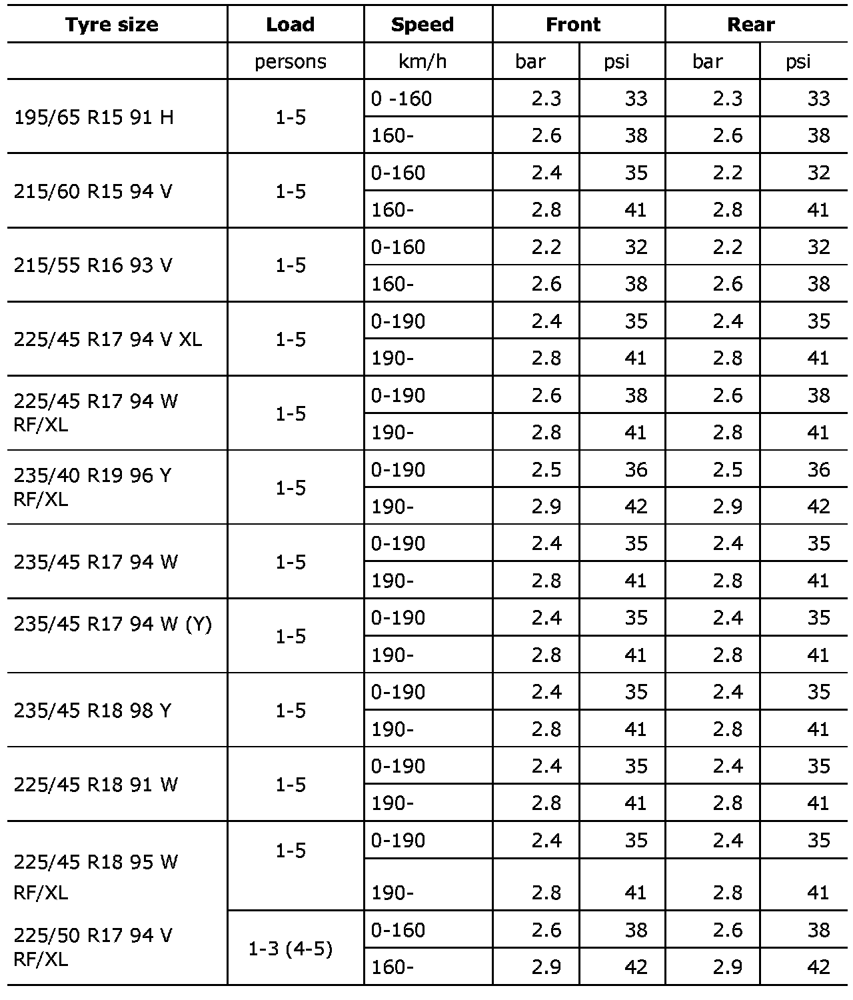
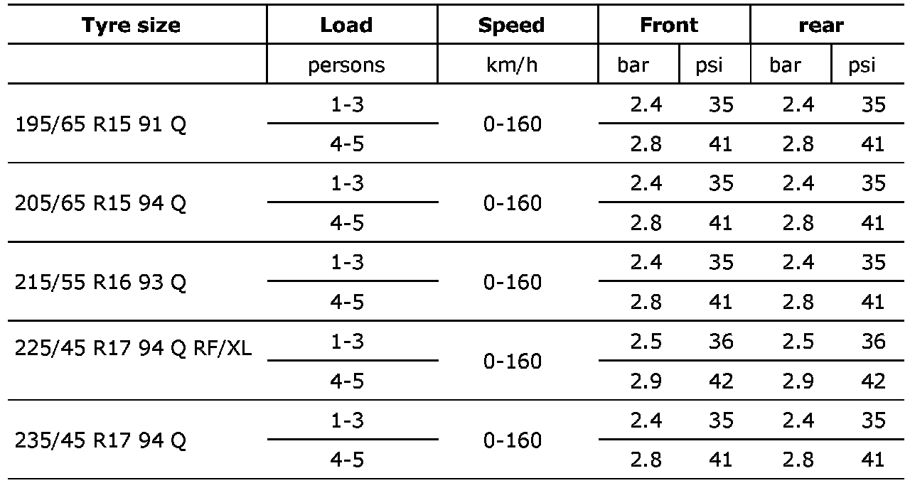
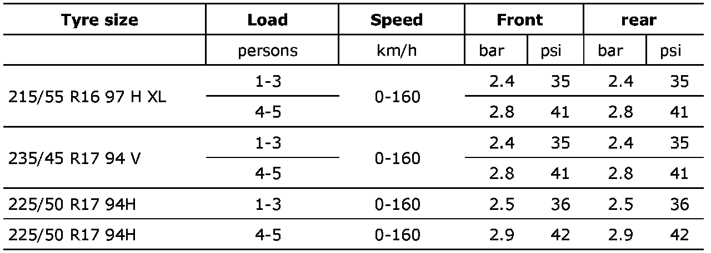
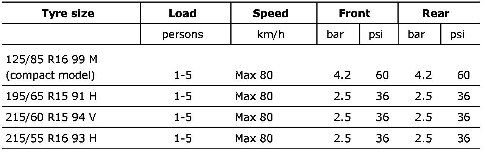

Recommended Tire Pressures
Recommended tire pressuresMeasuring tire pressures should normally be carried out on cold tires which means that the tires have the same temperature as ambient temperature.
The pressure will rise when the tire is warm (during fast motorway driving for example) and drop when the temperature drops.
The following values for air pressure apply at 20°C. For each 10°C change in temperature, the air pressure rises or falls by 0.1 bar (2 psi).
For each reduction in the number of passengers the air pressure can be reduced by 0.1 bar.
Maximum load = 5 persons and luggage.
Summer tires

Winter tires

All season tires

Spare tire
